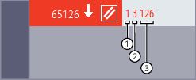
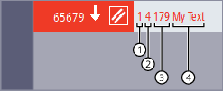
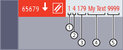

Aus einem NC-Programm heraus können Alarme gesetzt werden.
Der über die Bedienoberfläche zu projektierende Alarmtext wird in der Statusanzeige der Bedienoberfläche ausgegeben.
Alarmtexte können vordefinierte Parameter oder Parameter mit variablen Anwendertexten enthalten.
Mit einem Alarm ist jeweils eine Reaktion der Steuerung entsprechend der Alarmkategorie verbunden.
| Vordefinierte Prozedur zum Setzen eines Alarms SETAL muss in einem eigenen NC-Satz programmiert werden. | ||
| Alarmnummer | ||
Datentyp: | INT | ||
Wertebereich: | 60000 ... 64999 (reserviert) | Alarme für SIEMENS-Zyklen | |
65000 ... 69999 | Alarme für Anwenderzyklen | ||
| Zeichenfolge (optional) | ||
Datentyp: | STRING | ||
Alarmtexte werden in der Bedienoberfläche projektiert.
Weitere Informationen:
→ Inbetriebnahmehandbuch "Finale Arbeitsschritte zur Inbetriebnahme"
Anwenderzyklenalarme können die Parameterwerte %1 ... %4 enthalten:
Die folgenden Beispiele dienen zur Demonstration der Ausgabe der Alarmparameterwerte. Aus Gründen der Anschaulichkeit wurde in den verwendeten Alarmen kein Alarmtext hinterlegt, so dass nur die Werte der übermittelteten Parameter der Reihe nach ausgegeben werden.
| Programmcode | Kommentar |
|---|---|
| N10 ... | |
| N20 ... | |
| N30 SETAL(65126) | ; Alarm Nr. 65126 setzen |
| ... |
Nach dem SETAL-Aufruf erscheinen in der Statusanzeige der Bedienoberfläche folgende Informationen:
① | Kanalnummer = 1 |
② | Satznummer = 3 (3. Programmzeile) |
③ | Offset-Wert = 126 (65126 - 65000 = 126) |
| Programmcode | Kommentar |
|---|---|
| N10 ... | |
| N20 ... | |
| N30 ... | |
| N40 SETAL(65679, "My Text") | ; Alarm Nr. 65679 setzen |
| ... |
Nach dem SETAL-Aufruf erscheinen in der Statusanzeige der Bedienoberfläche folgende Informationen:
① | Kanalnummer = 1 |
② | Satznummer = 4 (4. Programmzeile) |
③ | Offset-Wert = 179 (65679 - 65500 = 179) |
④ | Im SETAL-Aufruf angegebene Zeichenfolge |
| Programmcode | Kommentar |
|---|---|
| N10 ... | |
| N20 ... | |
| N30 ... | |
| N40 SETAL(65679, "My Text " <<9999) | ; Alarm Nr. 65679 setzen |
| ... |
Nach dem SETAL-Aufruf erscheinen in der Statusanzeige der Bedienoberfläche folgende Informationen:
① | Kanalnummer = 1 | |
② | Satznummer = 4 (4. Programmzeile) | |
③ | Offset-Wert = 179 (65679 - 65500 = 179) | |
④ ⑤ | Im SETAL-Aufruf angegebene verkettete Zeichenfolge | |
④ | Die im SETAL-Aufruf in Anführungszeichen "" angegebene Zeichenfolge vom Datentyp STRING bildet den ersten Abschnitt der verketteten Zeichenfolge. | |
⑤ | Der darauf folgende mit Verkettungsoperator << angegebene Wert vom Datentyp INT bildet den zweiten Abschnitt der verketteten Zeichenfolge. Er wird in den Datentyp STRING umgewandelt und an den ersten Abschnitt angehängt. | |
| Hinweis |
Eine Verkettung zu einer gemeinsamen Zeichenfolge ist nur möglich, wenn dem anzuhängenden Wert der Verkettungsoperator << vorangestellt wird. Andernfalls findet keine Umwandlung in den Datentyp STRING statt und es kommt zur Ausgabe von Alarm 12330 "Typ des Parameters ... falsch". |
Siehe auch:
Aktuelle Sprache im HMI
Alarm setzen (SETAL): Weitere Informationen